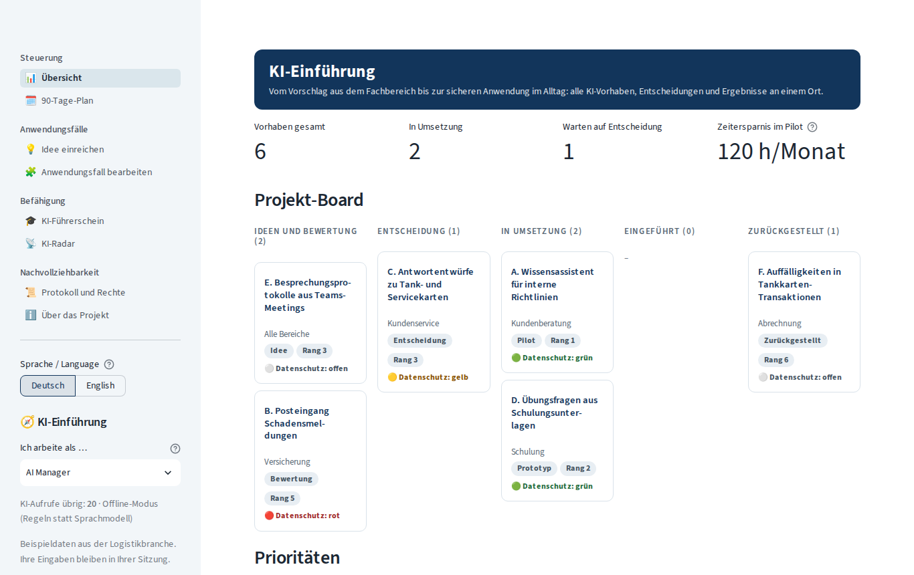
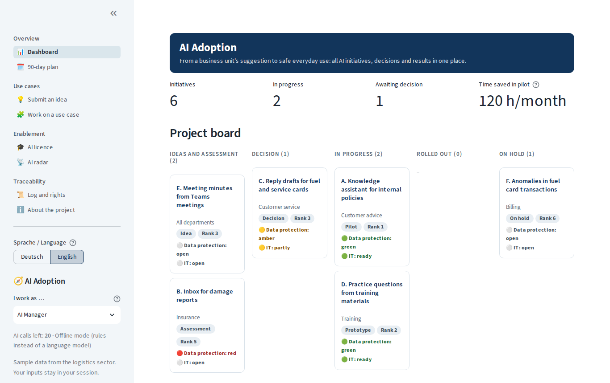
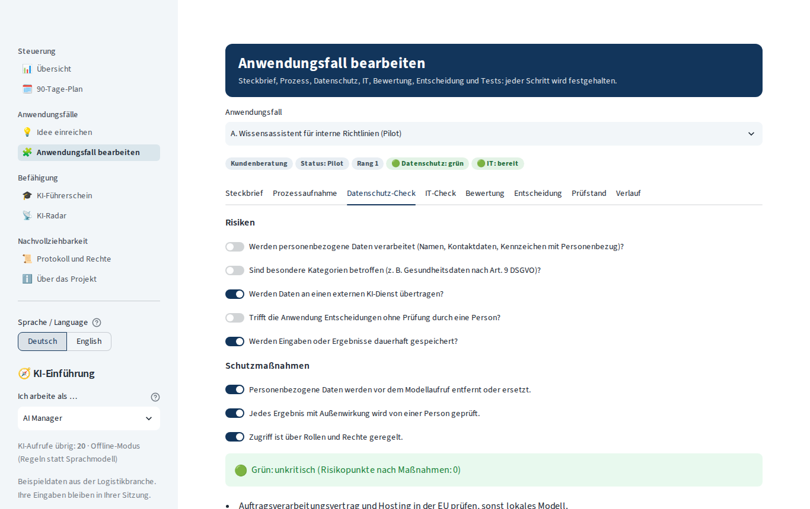
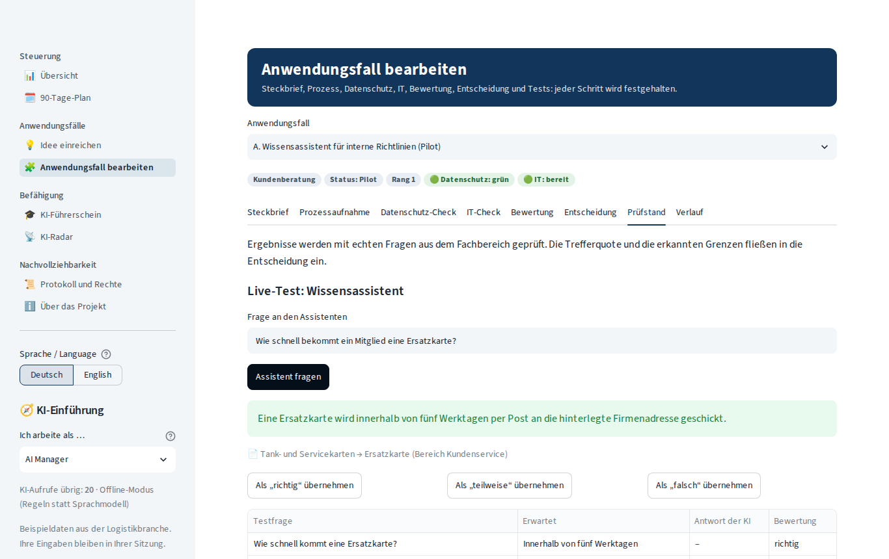
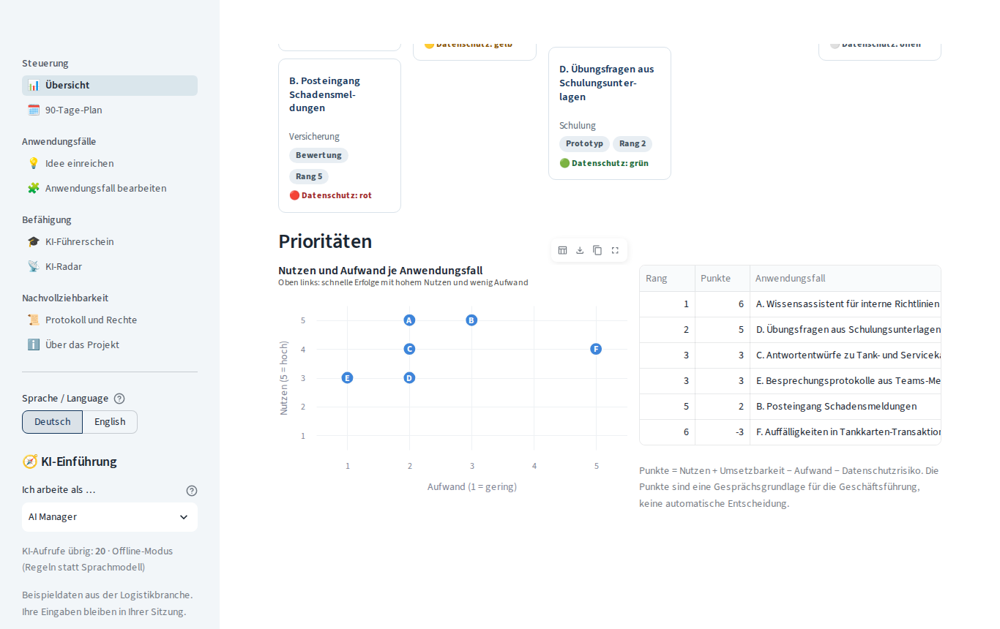
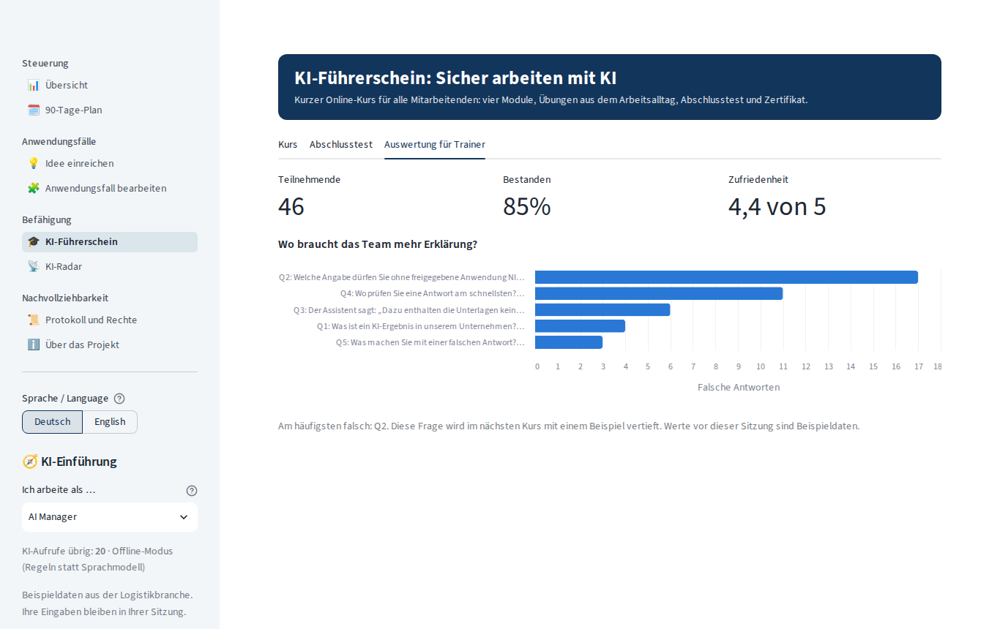

Eine Plattform, die den gesamten Arbeitszyklus eines AI Solutions Managers abbildet: Ideen aus dem Fachbereich aufnehmen, Prozesse und Datenschutz prüfen, Anwendungsfälle bewerten, Entscheidungen vorbereiten, Ergebnisse testen, Mitarbeitende schulen und neue Werkzeuge beobachten. Jeder Schritt ist sichtbar und nachvollziehbar.
A platform that mirrors the whole work cycle of an AI Solutions Manager: collecting ideas from business units, checking processes and data protection, assessing use cases, preparing decisions, testing results, training employees and watching new tools. Every step is visible and traceable.
Rundgang in etwa fünf Minuten: Sie begleiten eine Idee vom Vorschlag bis zur Entscheidung und wechseln dabei die Rolle.A tour of about five minutes: you follow one idea from suggestion to decision, switching roles on the way.
🔒 Gesperrter Knopf = Schritt einer anderen Rolle. Alles sind Beispieldaten; Neu laden setzt die App zurück.🔒 Locked button = a step for another role. Everything is sample data; reloading resets the app.
Vier Rollen arbeiten zusammen: Fachbereich, AI Manager, Datenschutz und Geschäftsführung. Jede Rolle darf nur ihre eigenen Schritte ausführen.Four roles work together: business unit, AI manager, data protection and management. Each role may only carry out its own steps.
Der Fachbereich beschreibt ein Problem in eigenen Worten; die KI macht daraus einen Steckbrief. Personenbezogene Daten werden vorher ersetzt.The business unit describes a problem in its own words; the AI turns it into a brief. Personal data is replaced first.
Arbeitsschritte und Minuten heute und mit KI ergeben die geschätzte Zeitersparnis pro Monat.Work steps and minutes today and with AI give the estimated time saved per month.
Risiken und Schutzmaßnahmen ergeben eine Ampel. Nur die Rolle Datenschutz gibt frei.Risks and safeguards give a traffic light. Only the data protection role can approve.
Nutzen, Aufwand, Umsetzbarkeit und Risiko ergeben Punkte und einen Rang als Gesprächsgrundlage.Benefit, effort, feasibility and risk give points and a rank as a basis for discussion.
Die Geschäftsführung entscheidet mit Begründung. Ohne Datenschutz-Freigabe ist keine Umsetzung möglich. Entscheidungsvorlage als PDF.Management decides with a reason. No implementation without data protection approval. Decision paper as PDF.
Ein Wissensassistent beantwortet Fragen nur aus freigegebenen Unterlagen, mit Quelle. Testfälle ergeben eine Trefferquote.A knowledge assistant answers only from approved documents, with the source. Test cases give a hit rate.
Analyse, Prototyp, Pilot und Einführung: jeder sieht, wo ein Vorhaben steht.Analysis, prototype, pilot and rollout: everyone sees where a project stands.
Kurs in vier Modulen, Übungen aus dem Alltag, Abschlusstest, Zertifikat als PDF und Auswertung für Trainer.Four-module course, everyday exercises, final test, PDF certificate and results for trainers.
Neue Werkzeuge nüchtern bewertet; jede Freigabe und Entscheidung im Protokoll, als CSV exportierbar.New tools assessed soberly; every approval and decision in the log, exportable as CSV.
Die Oberfläche ist auf Deutsch und Englisch verfügbar.The interface is available in German and English.






| ThemaTopic | UmsetzungHow it is done |
|---|---|
| Personenbezogene DatenPersonal data | E-Mail, Telefon, IBAN, Kfz-Kennzeichen, Geburtsdatum und Namen werden vor jedem Modellaufruf ersetzt. Eingaben bleiben in der Sitzung.E-mail, phone, IBAN, licence plates, birth dates and names are replaced before every model call. Inputs stay in the session. |
| Menschliche KontrolleHuman control | Punkte sind eine Gesprächsgrundlage, keine automatische Entscheidung. Freigaben erfolgen durch Personen in ihrer Rolle.Points are a basis for discussion, not an automatic decision. Approvals are given by people in their role. |
| Belegte AntwortenGrounded answers | Der Wissensassistent antwortet nur aus gefundenen Abschnitten und nennt sie; ohne passende Unterlage sagt er das offen.The knowledge assistant answers only from retrieved sections and names them; without a matching document it says so. |
| NachvollziehbarkeitTraceability | Rollen und Rechte, Protokoll jeder Änderung, Entscheidungsvorlage als PDF, Export als CSV.Roles and permissions, a log of every change, decision paper as PDF, CSV export. |
| TechnikTechnology | Python, Streamlit, OpenAI gpt-4o-mini mit regelbasiertem Offline-Moduswith a rule-based offline mode, BM25, fpdf2, Altair, 26 automatisierte Tests26 automated tests |
Alle Inhalte sind Beispieldaten aus der Logistikbranche.All content is sample data from the logistics sector.